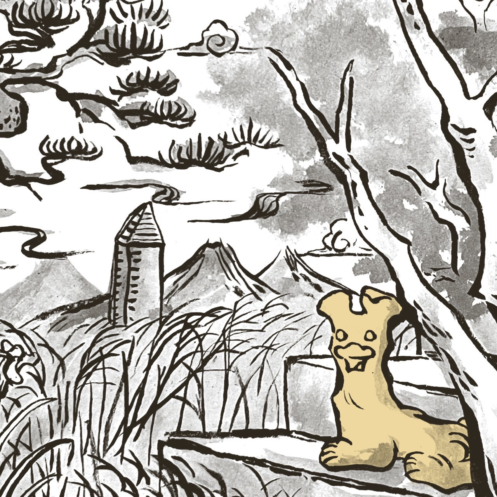

|
MENU |
木魚人 公式ホームページ木魚人公式HPにご訪問いただき、誠にありがとうございます。 Thank you so much for visiting the "MokuGyoJin official website". We created this site as a place to greet everyone we're meeting for the first time, as well as those who always support us. Please feel free to browse.  最新情報
|